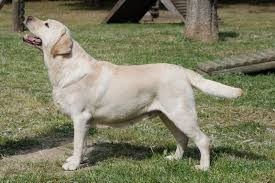

#1 Cobro de Caza
Especialidad: Aves y Agua
1. Labrador Retriever
Es una de las razas más utilizadas en la historia para la caza de cobranza (cobro de presas acuáticas y en tierra). Cuenta con un pelaje denso e impermeable, un excelente olfato y una "boca blanda" que permite traer las piezas intactas.
Origen
Canadá / Reino Unido
Cualidad Clave
Cobro en agua y tierra